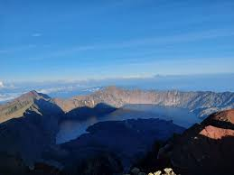

Enjoy the best Lombok trekking experience with our expert mountaineers!

Rinjani Mountain
Mount Rinjani is an active volcano on the Indonesian island of Lombok. With an elevation of 3,726m / 12,224ft Mt Rinjani is one of South East Asia’s highest peaks, attracting hikers and alpinists from around the world. If you are searching for information about how to climb Rinjani our Mount Rinjani Trekking Guide will have you covered – this page is more focused on the mountain itself.
 Pure elation on reaching Rinjani's summit at dawn.
Pure elation on reaching Rinjani's summit at dawn.
Where is Mount Rinjani?
Mount Rinjani is located on the island of Lombok in Indonesia. Lombok is situated in South East Asia, and forms part of the Lesser Sunda Isles. Mount Rinjani’s geographical co-ordinates are 8°24′52″S 116°27′35″E. Technically Mt Rinjani is in North Lombok (it falls under the administration of the Regency of North Lombok), but the slopes of Gunung Rinjani National Park span to North, East, West and Central Lombok – the mountain very much dominates the island.
What type of volcano is Mount Rinjani?
Mount Rinjani a stratovolcano, a volcano built-up of alternate layers of lava and ash. Stratovolcanoes are typically found along subduction zones (areas where one tectonic plate is pushed beneath another tectonic plate into the Earth’s Mantle). Mount Rinjani is also classed as a somma volcano, “a volcanic caldera that has been partially filled by a new central cone” (in this case the active Mt Barujari).
How high is Mount Rinjani?
The summit of Mount Rinjani is 3726m / 12,224ft elevation (AMSL).
 A trekker admiring the view from Mount Rinjani's summit.
How was Mount Rinjani formed?
The volcanic activity that formed Mount Rinjani is due to the subduction of the Indo-Australian oceanic crust beneath the Lesser Sunda Islands (an archipelago of which Lombok is part). In its current form, Mt Rinjani and its large crater lake are thought to have formed when Mt Samalas erupted in 1257. This eruption was colossal in scale, and is believed to have contributed to a period of global cooling and mini ice age. Mt Barujari (which sits in the crater lake, Segara Anak) is the active part of this historic volcanic system. It is believed by geologists that Mt Samalas stood next to Mt Rinjani. If you imagine the slopes that lead up to the caldera continuing to a summit, you can speculate as to where Samalas stood, and how high. It is believed that pressure in a magma chamber beneath Samalas rose to such a point that it started cracking the rock above it. When the magma broke out of Samalas the chamber below it partially emptied. With nothing to support the great weight of Mt Samalas above, the mountain collapsed in on itself. At its peak the eruption of Samalas blasted out over one million tonnes of material a second. During the ultimate collapse of the mountain, six cubic miles of ash and volcanic rock formed giant pyroclastic flows that raced down towards the coast at speeds of over 125 miles per hour. An immense volcanic cloud started to envelop the whole world. This was a cataclysmic event that is thought to be greater in magnitude than the eruption of Krakatoa.
When did Mount Rinjani last erupt?
Mount Rinjani last erupted on 27th September 2016. A small-scale eruption of Mt Barujari (which sits in Lake Segara Anak) produced a plume of ash that rose 2km above the crater, disrupting air travel in the region. No one was killed or injured as a result of the eruption.
Is Mount Rinjani dangerous?
Compared to many mountains around the world, Mt Rinjani is fairly safe to climb. It is not a technical mountain, with the paths well established and easy to follow. Although there are some steep sections where you should exercise caution, the use of ropes is not necessary. The main routes are trekked by thousands of tourists a year, many of whom are not experienced mountaineers. Volcanically Mt Rinjani is active, but the active component (Mt Barujari) lies in the lake, away from the trail. If agencies detect signs of increased volcanic activity that may result in an eruption, they take the precautionary measure of closing the National Park. Lombok is susceptible to earthquakes, which can result in rocks getting dislodged and landslides occurring. When this occurred in 2018 the mountain was evacuated successfully and the park temporarily closed. Fatalities are not completely unheard of, but thankfully they are very rare. The most prominent case of people losing their lives on the mountain was in 2007, when 7 students died from exposure. The university students had embarked on the ill-fated expedition despite all trekking routes in the national park being closed due to inclement weather. For this and other reasons, Rinjani Dawn Adventures always follows the rules of TNGR, the national park authority.
How to climb Mount Rinjani?
If you need up-to-date information about climbing Mount Rinjani, please read our official Mount Rinjani Trekking Guide. In short, the most direct route to Mt Rinjani’s summit is from the Sembalun side. Most ascents are usually made in the early morning. Although the mountain is not technically difficult, it is recommended to use a registered trekking company to climb Mount Rinjani. Many people choose to climb Mt Rinjani as a circuit, starting in Senaru and descending down to the crater lake, before climbing to the summit on the final day. You can climb Mt Rinjani as part of a 2 day/ 1 night; 3 day/ 2 night or 4 day/ 3 night package. Should you just want to climb as far as the crater rim (an achievement in itself) it is possible to do this as part of a 2 day / 1 night Senaru Crater Rim trek.
How hard is Mount Rinjani?
How hard you will find climbing Mount Rinjani will depend on your fitness level and hiking experience. The distances covered each day are not great (typically 10-14km), but there is significant elevation gain (which translates as steep hills!). The climb to the summit is difficult, as it involves steep gradient and soft terrain, but you don’t have to be a superhuman athlete to climb Mount Rinjani – we have had customers of all ages and levels conquer this amazing peak. To help people prepare for the challenge of climbing Mount Rinjani we created a fitness guide and video resource on our YouTube channel. You can find our exercise series, Mount Rinjani Training Guide here.
What to wear on Mount Rinjani?
For a complete packing-list and further information about climbing Mount Rinjani, please refer to our official Mount Rinjani Trekking Guide,which is updated frequently and serves as the most comprehensive resource for people wanting to summit Rinjani. In short, Lombok is situated in the tropics, so daytime temperatures are usually warm. T-shirt, shorts and trekking shoes are recommended for daytime walking. At night-time temperatures can drop significantly, so warm layers, trousers and a jacket are necessary. Going to the summit in the early morning can be particularly cold, especially if it is windy. In addition to the warm clothes already mentioned, hat and gloves are highly recommended. Being in the tropics there is also the chance of heavy rain. Rain can either be a quick shower or a prolonged torrent. For that reason, it’s worth taking a rain jacket or poncho. Please refer to our frequently asked questions for more in-depth advice about clothing and equipment.
What to pack for a Rinjani Trek?
You can find a comprehensive Rinjani packing list in the official Mount Rinjani Trekking Guide which is published by Rinjani Dawn Adventures every year. In short, Rinjani Dawn Adventures provides all camping and cooking equipment necessary for a Mt Rinjani trekking package. This is carried by our guides and porters. Most customers can fit all they need into a daypack of around 30-40l capacity. How many clothes you pack will depend on which Rinjani package you are doing. You should take enough clothes for the number of days you are trekking for. We can lend jackets, hats, gloves, trekking poles, and other essential items.
Climb Mount Rinjani with us
Enjoy the best Lombok trekking experience with our expert mountaineers!
Lets Trekking
Subscribe Our
Newsletter
Subscribe to our newsletter and get a special 30% discount.